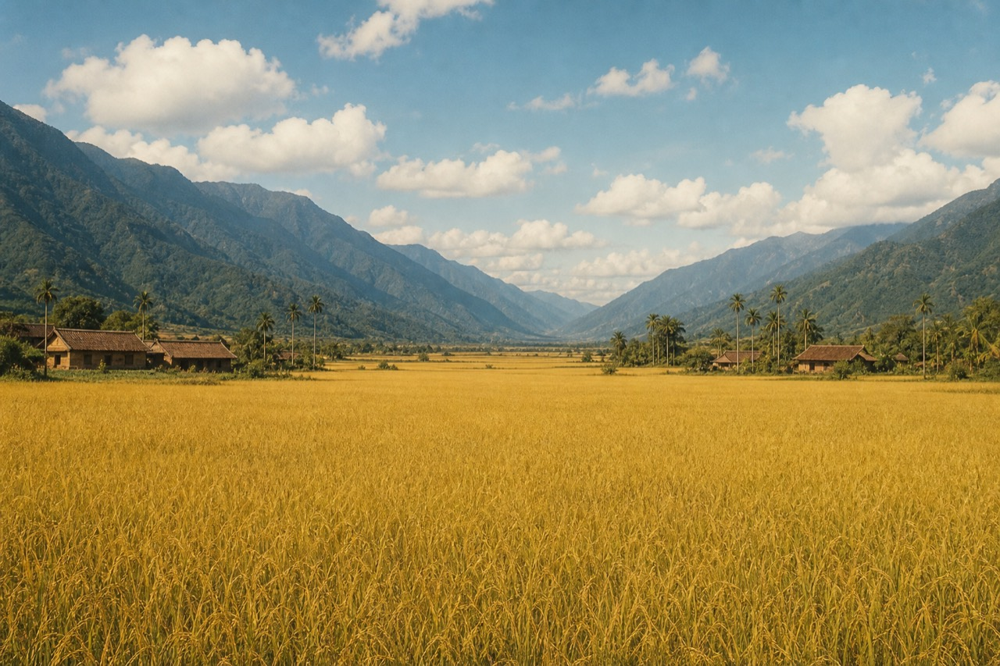

稻穗
0
腳程
–
撞到
0
剩餘
–
🔊
結束本趟
⚙ 回設定
下坡順風！
♪
名次
第 1
/7
騎鐵馬，送便當

🌾 民國五十年，花東縱谷。
日頭赤炎炎，
厝裡的人
透早就落田做穡。
中晝到了，燒燒的便當款好、綁上鐵馬後座——
「
緊騎去田頭，趁飯還燒的！
」
沿路撿稻穗、閃竹簍，天黑前送到田頭大樹下！
🍱 出發，去送便當！
騎鐵馬，送便當
治療師版
展示模式
身體往哪邊傾，鐵馬就往哪邊倒。
過彎要主動往彎內倒
，不然車會被甩出去、騎進田埂裡卡住。
偵測中…
選騎士（要用誰的鐵馬去送便當？）
阿公
斗笠·白汗衫
阿嬤
花布衫·菜籃車
少年
白襯衫·武車
少女
麻花辮·淑女車
今天要騎多難的路？
簡單
騎很慢·路上空曠
60 秒
普通
騎順順的
90 秒
困難
騎很快·稻穗障礙多
90 秒
🔧 進階微調（治療師設定）▼
今天走哪條路（同一條路可重複比較）
田邊路
溪邊路
山腳路
要騎多久
60 秒
90 秒
120 秒
轉向靈敏度
騎多快
稻穗／障礙密度
新手輔助（沒出力時自動扶正＋順著路走）
開（建議）
關
庄裡少年家一起送飯（比名次，建議
6 人
）
關
3 人
6 人
田野風景
音樂／音效
開
關
稻穗位置＝動作處方，這幾個旋鈕可在難度之上再個別微調（一動上面的難度就會標成「自訂」）。每次打開遊戲，難度固定回到「普通」、音效固定開。
啟用感測器並開始
改用鍵盤展示模式（← →）
安全提醒：坐姿進行，手機請牢固夾好；撞到不會結束，不必催促個案。所有設定會自動記住。
配樂：《望春風》《雨夜花》《四季紅》（鄧雨賢作曲，旋律已進入公有領域）、《丟丟銅仔》（宜蘭傳統民謠）。四首在遊戲中隨機輪播，畫面左下角會顯示曲名，可用來引導長輩回憶。全部由程式即時合成之純器樂編曲，不含錄音取樣、歌詞與人聲。
動作校正
—
校正會記錄「中立點」與「左右各自的最大舒適角度」，之後路上的左右兩邊就對應到個案自己的活動範圍。
目前傾斜
0°
準備好了嗎？
坐正、手機拿穩。按下方按鈕開始，一共三個步驟，每步都有充足時間，不用趕。
3
向左最大角
–
向右最大角
–
開始校正
跳過（用預設值）
← 回設定
螢幕轉向了
換了握持方式，傾斜的軸也換了，重新對一下就好。鐵馬會在原地等你。
快速重新校正
直接繼續（用預設值）
⚙ 回設定
「快速重新校正」＝一鍵直接開始，三步驟走完就回到遊戲。
🍱 便當送到了！
阿公放下鋤頭，笑呵呵接過還燒燒的便當：
「
辛苦啦！緊來樹腳歇睏，做伙呷飯！
」
看這趟的成績 →
這趟結束了
辛苦了！以下是這趟的成績。
🍱 便當送到了！
🏆 破紀錄！這是目前最好的一次
稻穗
0
走完路程
0%
撿穗率
–
撞到
0
騎進田埂
0
最後名次
–
查看復能報表
再騎一趟
⚙ 回設定
再騎一趟
列印／存 PDF
⚙ 回設定
素材載入中…